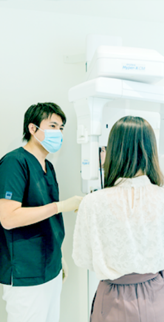
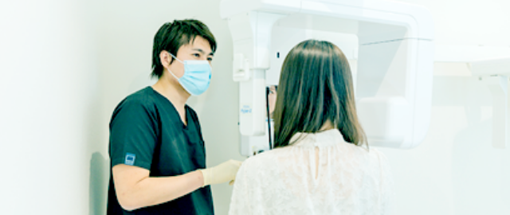
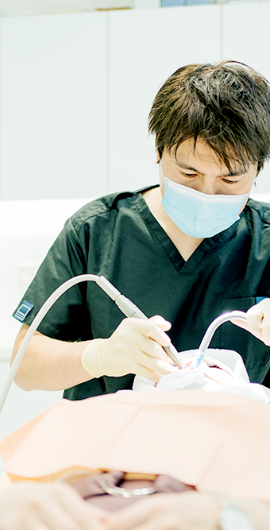
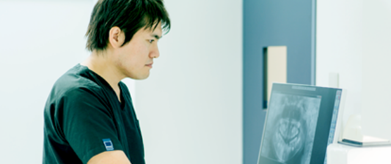
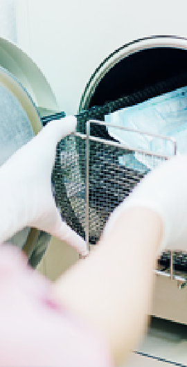
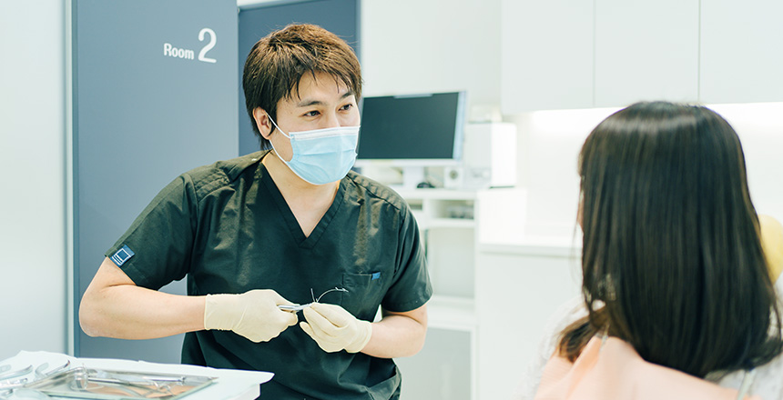
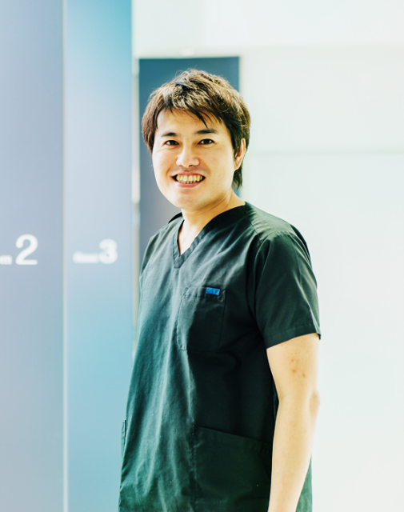

医院紹介動画clinic movie
1対1の診療で
心に変化をもたらす矯正治療をconcept
当院が大切にしているのは、患者さんとの1対1の密なコミュニケーションです。治療面はもちろん費用面においても、患者さんに安心していただけるようまずは対話を重視。さらに、これまで積み重ねた知識や経験を活かし、一人ひとりの年齢に合わせた治療をご提案します。
患者さんのご希望をしっかり伺い、それをできるかぎり叶える。その結果、自信を持って話せるようになったり、思い切り笑えるようになったり……。そんな心に前向きな変化をもたらせられるような、そして患者さんの豊かな生活につながるような診療のご提供に努めてまいります。
患者様の安心に
寄り添うための
4つのポイント
point01
 
1：1のコミュニケーションで
納得・安心の治療をご提供
費用がかかるからこそ丁寧なご説明を欠かさず、十分にご納得いただくことを重視。最初から最後まで、院長と患者さんの二人三脚でゴールを目指します。
point02

矯正認定医の院長が
患者さんの
治療・ケアの
すべてを担当
院長は日本矯正歯科学会認定医であり、矯正治療についての専門的な知識と実績を持っています。すべての治療とケアを院長が担当することで、わずかな変化も見逃しません。
point03

事前の明確な治療費の
ご提示・追加費用なしで安心
事前にすべての費用をご提示する「トータルフィー制度」を採用。もし予定より期間が長引いても、追加費用が発生することはありません。料金が明確なため、患者さんも安心です。
point04

患者さんの安全をお守りする
衛生管理の徹底
治療器具は使用ごとに適切な滅菌処理を実施し、患者さんごとに交換。可能なかぎり使い捨ての器具を使用するなどして院内感染を防止し、患者さんをお守りします。
患者さんの年齢に合わせた
矯正治療
- 成人矯正治療
- 中高生の
矯正治療 - 小児矯正治療
成人矯正の治療方針
成人矯正では基本的に、安定した歯並びの獲得を目指した治療方針を立案しています。しかし成人矯正はお子さんの治療と違い、患者さんご本人の希望を確認することが可能です。そこで、その点を重視して治療を進めていきます。またなるべく効率よく歯を動かせるよう配慮し、治療期間の短縮に努めています。
症例の詳細
- 患者様からの主訴
- テキストが入ります。テキストが入ります。テキストが入ります。テキストが入ります。テキストが入ります。
- 診断名
- テキストが入ります。テキストが入ります。テキストが入ります。テキストが入ります。テキストが入ります。
- 患者様からの主訴
- テキストが入ります。テキストが入ります。テキストが入ります。テキストが入ります。テキストが入ります。
- 診断名
- テキストが入ります。テキストが入ります。テキストが入ります。テキストが入ります。テキストが入ります。
- 患者様からの主訴
- テキストが入ります。テキストが入ります。テキストが入ります。テキストが入ります。テキストが入ります。
- 診断名
- テキストが入ります。テキストが入ります。テキストが入ります。テキストが入ります。テキストが入ります。
- 患者様からの主訴
- テキストが入ります。テキストが入ります。テキストが入ります。テキストが入ります。テキストが入ります。
- 診断名
- テキストが入ります。テキストが入ります。テキストが入ります。テキストが入ります。テキストが入ります。
成人矯正の治療方針
成人矯正では基本的に、安定した歯並びの獲得を目指した治療方針を立案しています。しかし成人矯正はお子さんの治療と違い、患者さんご本人の希望を確認することが可能です。そこで、その点を重視して治療を進めていきます。またなるべく効率よく歯を動かせるよう配慮し、治療期間の短縮に努めています。
症例の詳細
- 患者様からの主訴
- テキストが入ります。テキストが入ります。テキストが入ります。テキストが入ります。テキストが入ります。
- 診断名
- テキストが入ります。テキストが入ります。テキストが入ります。テキストが入ります。テキストが入ります。
- 患者様からの主訴
- テキストが入ります。テキストが入ります。テキストが入ります。テキストが入ります。テキストが入ります。
- 診断名
- テキストが入ります。テキストが入ります。テキストが入ります。テキストが入ります。テキストが入ります。
- 患者様からの主訴
- テキストが入ります。テキストが入ります。テキストが入ります。テキストが入ります。テキストが入ります。
- 診断名
- テキストが入ります。テキストが入ります。テキストが入ります。テキストが入ります。テキストが入ります。
- 患者様からの主訴
- テキストが入ります。テキストが入ります。テキストが入ります。テキストが入ります。テキストが入ります。
- 診断名
- テキストが入ります。テキストが入ります。テキストが入ります。テキストが入ります。テキストが入ります。
成人矯正の治療方針
成人矯正では基本的に、安定した歯並びの獲得を目指した治療方針を立案しています。しかし成人矯正はお子さんの治療と違い、患者さんご本人の希望を確認することが可能です。そこで、その点を重視して治療を進めていきます。またなるべく効率よく歯を動かせるよう配慮し、治療期間の短縮に努めています。
症例の詳細
- 患者様からの主訴
- テキストが入ります。テキストが入ります。テキストが入ります。テキストが入ります。テキストが入ります。
- 診断名
- テキストが入ります。テキストが入ります。テキストが入ります。テキストが入ります。テキストが入ります。
- 患者様からの主訴
- テキストが入ります。テキストが入ります。テキストが入ります。テキストが入ります。テキストが入ります。
- 診断名
- テキストが入ります。テキストが入ります。テキストが入ります。テキストが入ります。テキストが入ります。
- 患者様からの主訴
- テキストが入ります。テキストが入ります。テキストが入ります。テキストが入ります。テキストが入ります。
- 診断名
- テキストが入ります。テキストが入ります。テキストが入ります。テキストが入ります。テキストが入ります。
- 患者様からの主訴
- テキストが入ります。テキストが入ります。テキストが入ります。テキストが入ります。テキストが入ります。
- 診断名
- テキストが入ります。テキストが入ります。テキストが入ります。テキストが入ります。テキストが入ります。
こんなお悩みありませんか？problem
-
矯正をしたいけど人前で話す
機会が多い -
矯正をしている
ことを他人に知られたくない -
矯正治療中も、口元を気にせず笑ったり写真を
撮ったりしたい
裏側矯正なら
見た目を気にせず
歯並びを整えられます
裏側矯正とは？
歯の裏側（舌側）にブラケットという装置を装着し、ワイヤーを通して行う矯正治療です。装置もワイヤーも裏側にあるため外から見えず、まわりの人に矯正治療をしていることを気づかれにくいのが特徴です。
裏側矯正のメリット
- 他人に気づかれずに矯正治療ができる
- 装置が、外からの衝撃によるダメージを受けにくい
- 表側矯正に比べて虫歯になりにくい
- 歯を舌で押すクセを改善できる

当院は、表から見えない
「裏側矯正」が得意です
歯の裏側の形状は複雑であり、ブラケットの装着が難しいのが特徴です。もし表側矯正と同じ方法を用いれば、歯の動き方がまったく変わり治療結果に影響してしまいます。そのため繊細な注意観察が必要になります。
当院院長は裏側矯正を得意としており、一人ひとりに合わせた治療のご提供が可能です。初診カウンセリングは無料ですので、まずはお気軽にご相談ください。
矯正治療メニュー

日本矯正歯科学会認定医
くろかわ矯正歯科院長黒川 真
日本矯正歯科学会認定医の
知識と技術で、
患者さんに
心からの笑顔を提供しますgreeting
当院院長は、日本矯正歯科学会認定医です。矯正治療に関する豊富な知識と実績を元に、何より「患者さんの安心」を大切にした診療を行っています。また治療のゴールを「歯並びを整えること」に定めるのではなく、その先にある患者さんの笑顔や豊かな表情を思い浮かべて、日々真摯に治療に取り組んでいます。